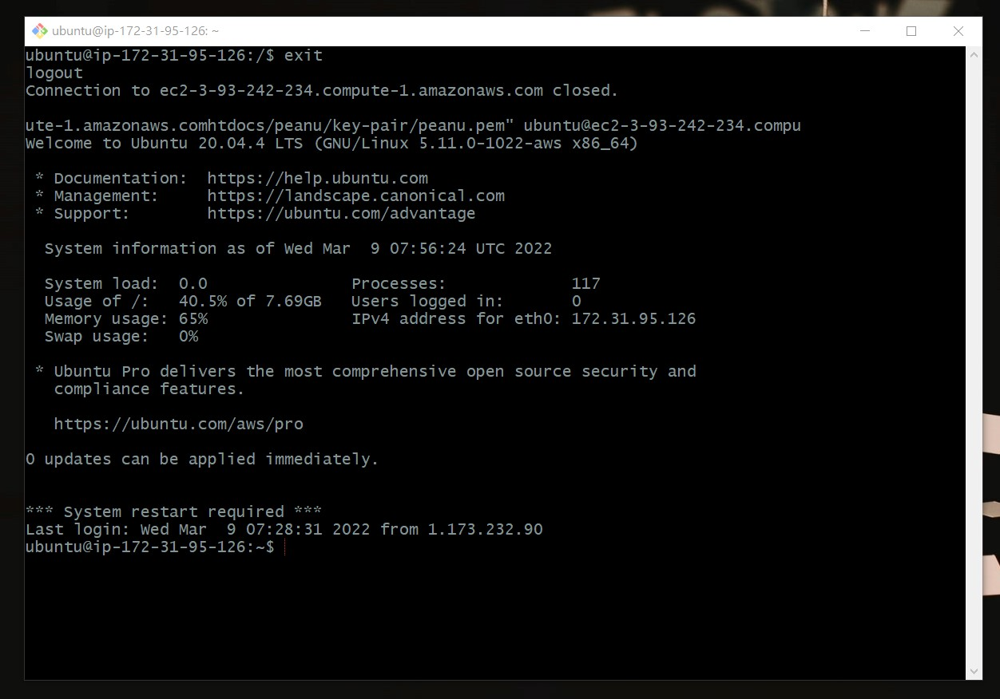

解除多年疑惑。
簡述
伺服器其實只是一台裝了「伺服器程式」的電腦，例如：Apache 就是一種伺服器程式。
所以呢，只要你在自己的電腦上裝伺服器程式，就可以說它是一台「伺服器」。
談談關於伺服器主機
雖然說只要安裝伺服器程式就可以當成是一個伺服器，不過有幾個問題：
- 正常人不會想讓電腦 24 小時全年無休的開著吧？
- 家裡電腦的網路有可能是浮動 IP，一直變來變去的話別人是要怎麼連？
所以接下來會來介紹幾種建立伺服器的方式：
- 實體主機
- 虛擬空間
- 虛擬主機
實體主機
這個就是前面講的，在「實體電腦」上安裝伺服器程式來用，例如我現在用的電腦就是一台實體主機。不過常見的做法是去外面跟人家「租一台」實體主機來用，為了避免前面提的那些問題。
實體主機的特性是使用者擁有「主機的控制權和資源」，所以想怎麼搞都可以。
不過有一個很大的缺點：當實體主機壞了，東西就壞掉了。
虛擬空間
一台電腦的某個空間（像是資料夾），你沒有這台電腦的所有控制權，只侷限在我給你的這個空間（資料夾）裡面，你可以放檔案在這裡，但不可以裝新的伺服器程式也不能玩遊戲。
實際例子：只能用 FTP 來傳檔案，因為沒有控制權。
虛擬主機（目前的主流）
本質也是一台「實體主機」，但裡面可以有很多個虛擬主機，就像我可以在電腦上同時裝 Mac、Linux 系統的道理差不多。
簡單來說可以想成是跟別人共用一台電腦的概念，但跟虛擬空間不同的是所有人都有這台主機的控制權，可以安裝伺服器程式、也可以放自己的網站之類的。
另外是資源要跟大家共享，例如說實體主機只有 4GB 的 RAM，現在有四個虛擬主機，代表每個虛擬主機只能分配到 1GB 的 RAM。
好處是不用擔心「實體主機壞掉」的問題，因為虛擬主機可以再遷移到別的實體主機上。原理可以想成是虛擬主機也是某種「程式」，只要把程式放到別的主機上來跑一樣能運作。
管理主機的方法
關於虛擬主機，你可能會好奇「電腦不在我這裡的話，要怎麼操控它？」，所以這邊會做個解釋。
比較常見的作法有兩種：
- 遠端桌面
透過某種方式連到遠端電腦，把畫面顯示到自己的電腦上（Window 比較常見）。
- SSH（Secure shell）
透過 CLI 來連到遠端的主機，接著就能「下指令」來操控。
連到虛擬主機的畫面大概就長這樣：

跟一般的 GUI 不同，你只能透過 CLI 來跟它溝通，這時候就考驗你對 CLI 的熟悉度了。